The Komodo Workspace
The Start Page
Komodo's Start Page is displayed by default when Komodo is first opened. It provides quick access to, online resources, recently opened files and projects, tutorials, and a sample project.
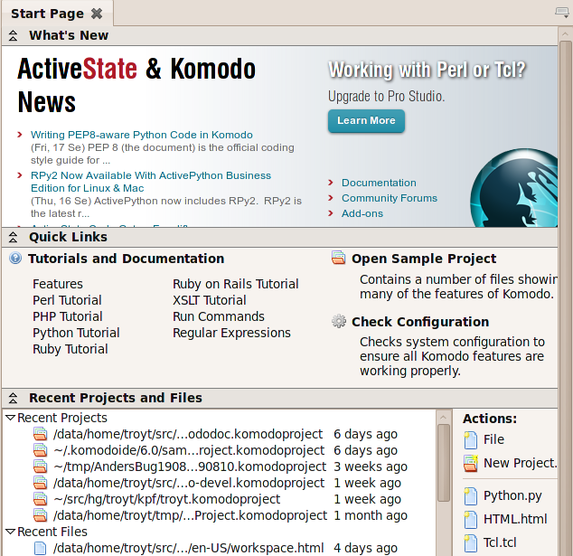
Sections of the page can be hidden by clicking the arrow icons next to the section title. Other start page preferences can be set under Edit|Preferences|Appearance.
The Recent Projects and Files section shows the full path to to the projects and files, and the time they were last modified.
Menus
The default drop-down menus are: File, Edit, Code, Navigation View, Debug, Project, Tools, and Help. The functions accessed from each menu are described in detail in the relevant section of the User Guide. For example, the items accessed from the Debug menu are described in Debugging Programs.
On Mac OS X, there is also a Komodo menu on the far left.
Context Menus
Komodo displays right-click context menus with options relative to the area of Komodo where the option was invoked, depending the location of the mouse pointer. Use the left mouse button to select items from context menus.
- Menu Bar Areas and Toolbar Areas: Options to view or hide individual toolbars and toolbar text (unavailable on Mac OS X).
- Projects Sidebar (Project Name): Options to open, save, activate, and close the projects, and to add a file to the selected project.
- Projects Sidebar (File Name): Options to edit, remove or export the selected file ,and access to source code control commands.
- Toolbox Sidebar: Options to work with the specified component.
- Editor Pane (File Editing Area): Options to cut, copy, and paste text, to set a breakpoint, and to edit the file properties and settings.
- Editor Pane (Tabs): Options to close the selected file and to view the file's properties and settings.
- Bottom Pane: The context menus available
on tabs in the Bottom Pane (e.g. the
Debug tab and the Breakpoints
tab) contain subsets of Komodo's top-level menus.
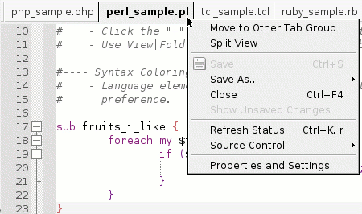
Toolbars
To hide or show toolbars, or to hide or show button text, do one of the following:
- From the View menu, select Toolbars.
- Right-click on a menu bar or toolbar, and toggle the check mark beside the pertinent option.
- From the Edit menu, select Preferences. (On Mac OS X, from the Komodo menu, select Preferences.) Then, click the Appearance option and select or clear the desired options.
The Standard Toolbar provides quick access to common editing functions. Launch the Komodo User Guide by clicking the Help button.
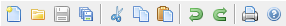
The Tools Toolbar contains the commonly used commands on the Tools menu, including Preview in Browser, the Regular Expression Toolkit, and the the interactive shell.
Komodo IDE only
The Workspace Toolbar toggles the main components of the Komodo workspace. Use this toolbar to show/hide the Left Pane, Bottom Pane and Right Pane, and to display or shift focus to a specific tab in one of these panes (e.g. the Toolbox tab).
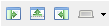
The Debug Toolbar provides quick access to common debugging functions, such as Step In and Step Over. For more information about debugging programs, see Debugging Programs.
Komodo IDE only
Use the Open/Find Toolbar to open files and search for strings. Find strings in files currently displayed in the editor or in files not currently open in Komodo but located on the filesystem. See Open/Find Toolbar for more information.
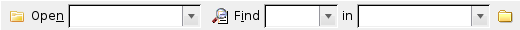
The Source Code Control Toolbar (Komodo IDE only) makes it easy to work with files that are stored in Perforce or CVS. For more about using the Source Code Control Toolbar, see Source Code Control.
Komodo IDE only
The Macros Toolbar makes it easier to record, play and save macros. For more information see Macros.
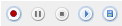
For users of PDK 6.0 and later, the PDK Toolbar provides quick access to Perl Dev Kit tools. Buttons for launching the core PDK tools (PerlApp, PerlSvc, PerlCtrl, and PerlTray) are grayed out unless a Perl file is the active file in the Editor Pane. Availability of buttons depends on which features are included in your PDK version. If the PDK is not installed on your system, all toolbar options are grayed out when the PDK Toolbar is displayed. For more information on how the PDK integates with Komodo, see Komodo and the Perl Dev Kit.
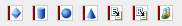
It is also possible to create Custom Toolbars consisting of items in the Toolbox or Komodo projects (e.g. run commands, code snippets and directory shortcuts).
Left Pane
The Left Pane of the Komodo workspace contains the Places, Code and DOM sidebars.
Places
The Places sidebar displays a file manager and a list of recently used projects. To display it, select View|Tabs & Sidebars|Places, or use the associated key binding.

Related Topics:
Code Sidebar Komodo IDE only
The Code sidebar displays a hierarchical view of all code symbols (for example, variables, methods, imports) in an open file. Symbols can be sorted and filtered, and the current scope of a symbol can be located. To display the Code sidebar, select View|Tabs & Sidebars|Projects, or use the associated key binding.
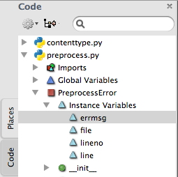
Related Topics:
DOM Viewer Sidebar Komodo IDE only
The DOM Viewer tab displays the DOM nodes (e.g. elements and attributes) of the current document as a collapsible tree. The DOM Viewer lets you find, view and jump to any of these nodes quickly.
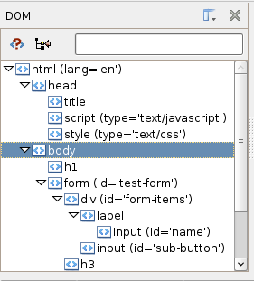
Related Topics:
Database Explorer Sidebar Komodo IDE only
The Database Explorer shows ...
Right Pane
The Right Pane of the Komodo workspace contains the Toolbox and, optionally, a Shared Toolbox.
Toolbox Sidebar
Use the Toolbox sidebar to manage and store Komodo components (for example, frequently used files, code snippets, commands, and URLs). Add items to the Toolbox, as well as to folders within the Toolbox. Items can be imported to the Toolbox and exported as Komodo project files and packages. Items added to the Toolbox are displayed with associated icons for easy identification. To display the Toolbox sidebar, select View|Tabs & Sidebars|Toolbox, or use the associated key binding.
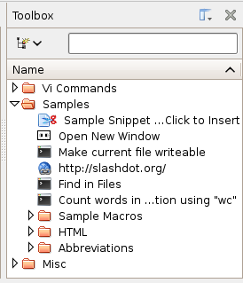
Related Topics:
Shared Toolbox Sidebar Komodo IDE only
A Shared Toolbox has the same functionality as the Toolbox except that it can be shared among multiple users. For example, use a Shared Toolbox to store code snippets that are frequently used by a number of programmers. The Toolbox sidebar is only available if the Shared Toolbox preference has been set (select Edit|Preferences|Shared Support, or, on Mac OS X, select Komodo|Preferences|Shared Support).
Related Topics:
Editor Pane
The large pane in the middle of the Komodo workspace is the Editor Pane. The Editor Pane is used for editing and debugging. Each open file has a corresponding tab at the top of the Editor Pane. Change the order of the tabs by clicking and dragging tabs to the desired position. The name of the active file (that is, the file that is currently displayed in the Editor Pane) is displayed in bold text. Use the left and right arrow buttons on the right side of the tabs to scroll though open files. Use the close button "X" on the right side of the tab display to close the active file. An asterisk beside the filename indicates that the file has been changed since it was opened, and needs to be saved. If a file is under source code control, a file status icon to the left of the filename indicates its current status.
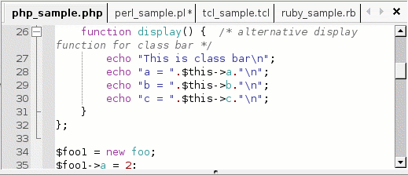
Related Topics:
Bottom Pane
The Bottom Pane spans the width of the Komodo workspace and displays at the bottom of the screen. The Bottom Pane contains the following tabs:
- Breakpoints Tab: manage breakpoints and spawnpoints in the current debugging session(s)
- Command Output Tab: displays the results of commands run in the Run Command dialog box
- Find Results Find Results 2 Tabs: display the results of the Find All, Find in Files or Replace in Files functions
- SCC Output Tab: displays details of source code control commands, such as editing or checking in files
- Interactive Shell Tab: displayed when the interactive shell is launched as a stand-alone tool or from within a debugging session
- Debug Tab: consolidates views of the debugger output, call stack, program variables (local and global), and watched variables.
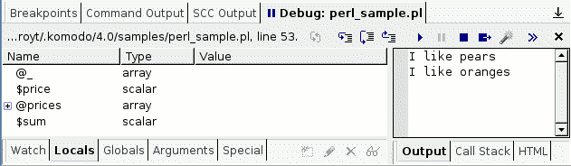
The Breakpoints, SCC Output, Interactive Shell, and Debug tabs are only available in Komodo IDE.
Status Bar
At the very bottom of each Komodo window is the Status Bar. From left to right, it displays:
- Editor Mode: when using Vi Emulation, this shows which mode you are in (e.g. Visual vs. Insert).
- Status: shows messages from Komodo describing events (e.g. the return of external commands).
- Section List: an expandable list of code or markup objects in the current file. When not expanded, it displays the object at the current cursor position.
- Syntax Checking Status: shows the current status of syntax checking. Clicking this gives options to "Check Syntax Now", "Jump to next result", or "Clear warning/error squiglies".
- File Encoding: shows the encoding of the current file (e.g. ASCII, UTF-8, Latin-1, etc.)
- Line and Column position: shows the current position of the cursor.
- Selection: shows the character and line count of the selection (if there is one).
- Language: shows which programming language Komodo is parsing the current file as. Click to select a different language from the pop-up list or "Reset to best guess."
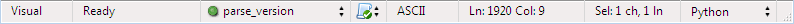
Managing Tabs, Sidebars and Panes
Use the View menu, Standard Toolbar or Komodo key bindings to choose which sidebars and tabs are displayed in the Komodo workspace.
Showing and Hiding Tabs and Sidebars
To display a tab or sidebar in the left, right or bottom pane, select View|Tabs & Sidebars|<Name>, or see Komodo's default key bindings (Help|List Key Bindings) for the appropriate keyboard shortcut. Alternatively, click the Show Specific Sidebar/Tab button on the Workspace toolbar.
Showing and Hiding Panes
To show and hide the left, right or bottom pane, click the associated button on the Workspace Toolbar. Click the close arrow in the top right corner of a pane to close it.
Resizing Panes
When you are focusing on coding alone, you may want to maximize the Editor Pane. To increase the size of the Editor Pane, hide the Left Pane and the Right Pane. The Left, Right and Bottom Panes can be resized by clicking and dragging.
Enabling Full Screen Mode
To take advantage of as much of the Komodo workspace as possible, select View|Full Screen. When Full Screen mode is enabled, the workspace is maximized, and the toolbars and status bar are hidden. To restore the previous view, select View|Full Screen again.